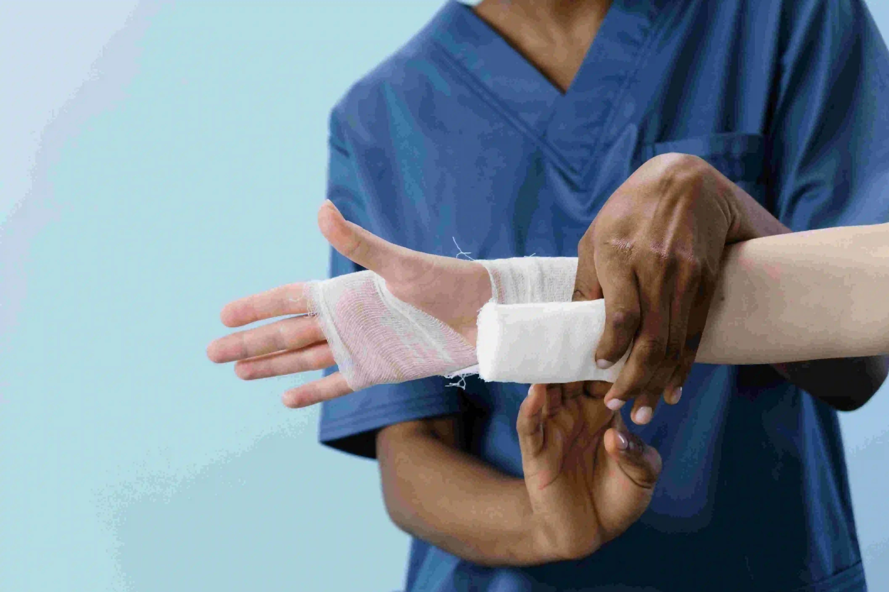

Recover safely after surgery with the best post-surgery recovery tips including healthy diet, proper rest, pain control, and wound care at home. Trusted guidance from Gani Hospital Ramanathapuram.
Recovering after surgery is an important stage of healing. Your body needs enough rest, nutrition, hydration, and proper wound care to regain strength and repair tissues. Recovery time may vary depending on the type of surgery, age, and overall health condition.
Following medical advice at home can reduce pain, prevent infection, and improve comfort. At Gani Hospital Ramanathapuram, we guide patients through every step of safe post-operative recovery.
Many people focus only on the operation, but recovery after surgery is equally important. Proper care at home helps the wound heal faster, reduces swelling, and lowers the risk of infection.
Good recovery habits also improve energy levels, support safe movement, and help patients return to daily routine sooner. Ignoring instructions may delay healing or cause complications.
Include eggs, milk, curd, dal, pulses, paneer, fish, or chicken if allowed. Protein helps rebuild tissues, supports muscle strength, and improves healing after surgery.
Fresh fruits and vegetables provide vitamins, minerals, and antioxidants that support immunity and reduce recovery stress on the body.
Drink enough water, soups, tender coconut water, or doctor-approved fluids. Good hydration helps circulation, digestion, and faster recovery.
Whole grains, oats, fruits, and vegetables help prevent constipation after surgery, which can happen due to pain medicines or reduced movement.

Proper wound care after surgery helps prevent infection, reduces pain, and supports faster healing. Always follow discharge instructions carefully.
If the wound becomes warm, painful, or starts leaking fluid, contact your doctor immediately.
Rest gives the body time to repair tissues and regain strength. Quality sleep is especially important during the first few days after surgery because healing processes are more active during rest.
Patients should avoid overexertion, lifting heavy objects, and sudden movements. Short walks may be advised to improve blood circulation and prevent stiffness.
Balancing rest with gentle movement helps support a smoother recovery.
Some pain is normal after surgery, but it should gradually improve. Take pain medicines exactly as prescribed and do not stop them suddenly without medical advice.
If pain becomes stronger each day instead of better, it may need medical review.
Some symptoms after surgery need urgent medical attention. Contact a doctor immediately if you develop high fever, heavy bleeding, pus from wound, severe pain, breathing difficulty, repeated vomiting, or trouble passing urine.
Early treatment can prevent serious complications and reduce recovery delays.
Recovery time depends on surgery type. Minor procedures may need a few days, while major surgeries may need several weeks.
Our team provides continued recovery support after surgery through wound checks, medicine review, pain management, and healing assessment.
For more detailed medical information and recovery guidance after surgery, you can refer to these trusted resources:
Successful post-surgery recovery depends on healthy food, enough rest, safe movement, pain control, and careful wound care. Following discharge instructions can improve healing speed and lower complication risks.
If you experience unusual symptoms or delayed healing, seek medical advice without delay. For trusted surgical treatment, follow-up care, and recovery guidance, choose Gani Hospital Ramanathapuram.
What foods help healing after surgery?
Protein foods, fruits, vegetables, and fluids help recovery.
Can I bathe after surgery?
Only as advised by your doctor depending on wound type.
How long does pain last?
Mild pain is common for days to weeks depending on surgery.
When should I worry about wound infection?
If there is pus, fever, redness, smell, or swelling.
When should I visit for review?
Attend all scheduled follow-up appointments.